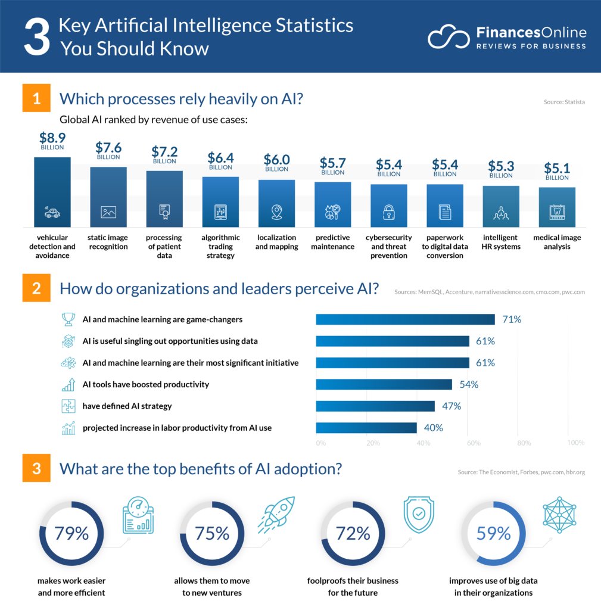

artificial intelligence statistics main page
links :
main page
artificial intelligence benefits
artificial intelligence risks
artificial intelligence statistics
artificial intelligence updater
artificial intelligence growth
